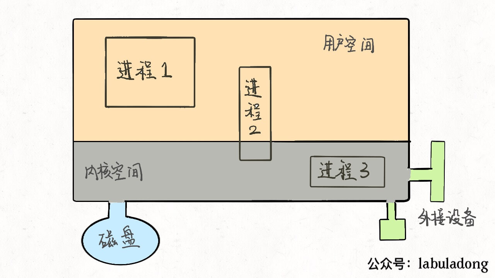
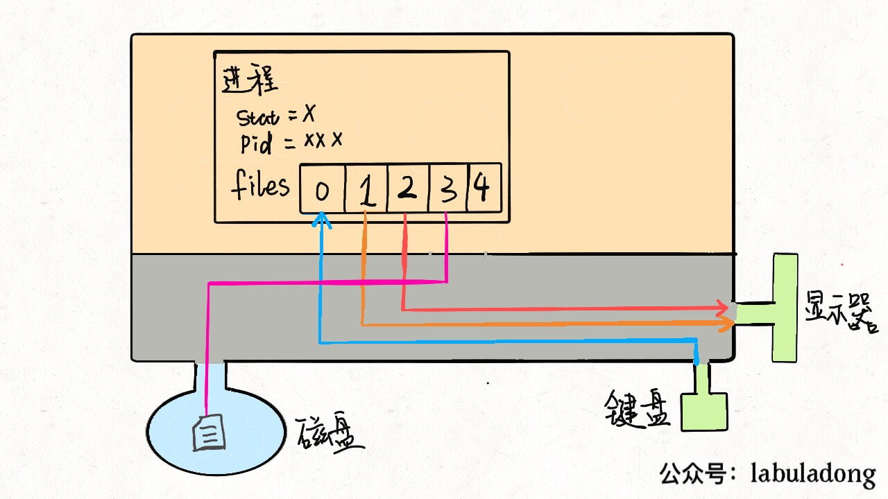
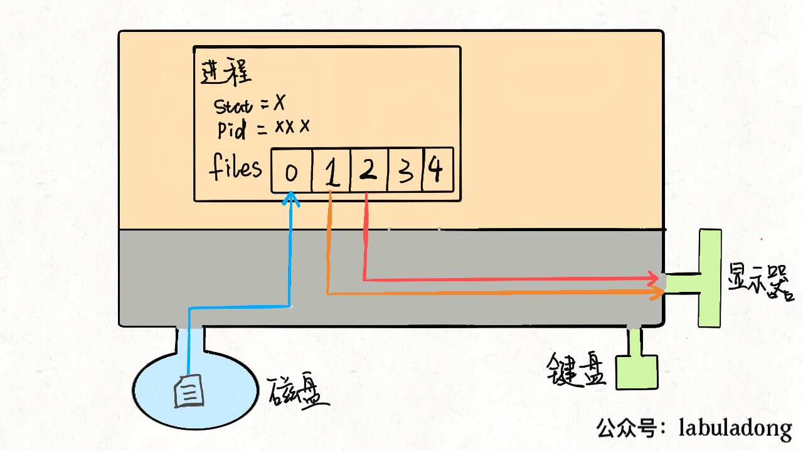
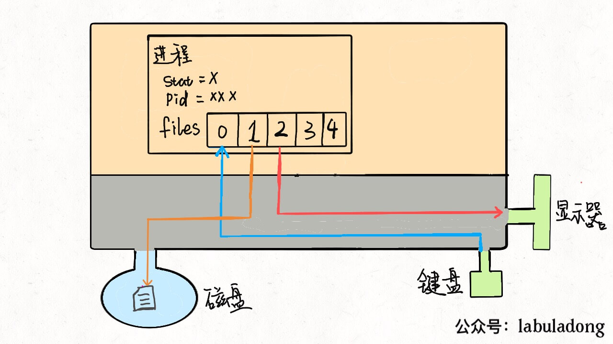
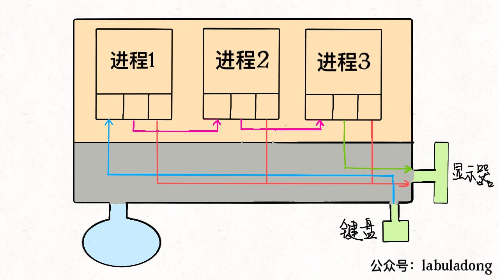

Linux的进程、线程、文件描述符是什么
说到进程，恐怕面试中最常见的问题就是线程和进程的关系了，那么先说一下答案：在 Linux 系统中，进程和线程几乎没有区别。
Linux 中的进程就是一个数据结构，看明白就可以理解文件描述符、重定向、管道命令的底层工作原理，最后我们从操作系统的角度看看为什么说线程和进程基本没有区别。
一、进程是什么
首先，抽象地来说，我们的计算机就是这个东西：

这个大的矩形表示计算机的内存空间，其中的小矩形代表进程，左下角的圆形表示磁盘，右下角的图形表示一些输入输出设备，比如鼠标键盘显示器等等。另外，注意到内存空间被划分为了两块，上半部分表示用户空间，下半部分表示内核空间。
用户空间装着用户进程需要使用的资源，比如你在程序代码里开一个数组，这个数组肯定存在用户空间；内核空间存放内核进程需要加载的系统资源，这一些资源一般是不允许用户访问的。但是注意有的用户进程会共享一些内核空间的资源，比如一些动态链接库等等。
我们用 C 语言写一个 hello 程序，编译后得到一个可执行文件，在命令行运行就可以打印出一句 hello world，然后程序退出。在操作系统层面，就是新建了一个进程，这个进程将我们编译出来的可执行文件读入内存空间，然后执行，最后退出。
你编译好的那个可执行程序只是一个文件，不是进程，可执行文件必须要载入内存，包装成一个进程才能真正跑起来。进程是要依靠操作系统创建的，每个进程都有它的固有属性，比如进程号（PID）、进程状态、打开的文件等等，进程创建好之后，读入你的程序，你的程序才被系统执行。
那么，操作系统是如何创建进程的呢？对于操作系统，进程就是一个数据结构，我们直接来看 Linux 的源码：
struct task_struct {
// 进程状态
long state;
// 虚拟内存结构体
struct mm_struct *mm;
// 进程号
pid_t pid;
// 指向父进程的指针
struct task_struct __rcu *parent;
// 子进程列表
struct list_head children;
// 存放文件系统信息的指针
struct fs_struct *fs;
// 一个数组，包含该进程打开的文件指针
struct files_struct *files;
};
task_struct就是 Linux 内核对于一个进程的描述，也可以称为「进程描述符」。源码比较复杂，我这里就截取了一小部分比较常见的。
其中比较有意思的是mm指针和files指针。mm指向的是进程的虚拟内存，也就是载入资源和可执行文件的地方；files指针指向一个数组，这个数组里装着所有该进程打开的文件的指针。
二、文件描述符是什么
先说files，它是一个文件指针数组。一般来说，一个进程会从files[0]读取输入，将输出写入files[1]，将错误信息写入files[2]。
举个例子，以我们的角度 C 语言的printf函数是向命令行打印字符，但是从进程的角度来看，就是向files[1]写入数据；同理，scanf函数就是进程试图从files[0]这个文件中读取数据。
每个进程被创建时，files的前三位被填入默认值，分别指向标准输入流、标准输出流、标准错误流。我们常说的「文件描述符」就是指这个文件指针数组的索引，所以程序的文件描述符默认情况下 0 是输入，1 是输出，2 是错误。
我们可以重新画一幅图：

对于一般的计算机，输入流是键盘，输出流是显示器，错误流也是显示器，所以现在这个进程和内核连了三根线。因为硬件都是由内核管理的，我们的进程需要通过「系统调用」让内核进程访问硬件资源。
PS：不要忘了，Linux 中一切都被抽象成文件，设备也是文件，可以进行读和写。
如果我们写的程序需要其他资源，比如打开一个文件进行读写，这也很简单，进行系统调用，让内核把文件打开，这个文件就会被放到files的第 4 个位置：

明白了这个原理，输入重定向就很好理解了，程序想读取数据的时候就会去files[0]读取，所以我们只要把files[0]指向一个文件，那么程序就会从这个文件中读取数据，而不是从键盘：
$ command < file.txt

同理，输出重定向就是把files[1]指向一个文件，那么程序的输出就不会写入到显示器，而是写入到这个文件中：
$ command > file.txt

错误重定向也是一样的，就不再赘述。
管道符其实也是异曲同工，把一个进程的输出流和另一个进程的输入流接起一条「管道」，数据就在其中传递，不得不说这种设计思想真的很优美：
$ cmd1 | cmd2 | cmd3

到这里，你可能也看出「Linux 中一切皆文件」设计思路的高明了，不管是设备、另一个进程、socket 套接字还是真正的文件，全部都可以读写，统一装进一个简单的files数组，进程通过简单的文件描述符访问相应资源，具体细节交于操作系统，有效解耦，优美高效。
三、线程是什么
首先要明确的是，多进程和多线程都是并发，都可以提高处理器的利用效率，所以现在的关键是，多线程和多进程有啥区别。
为什么说 Linux 中线程和进程基本没有区别呢，因为从 Linux 内核的角度来看，并没有把线程和进程区别对待。
我们知道系统调用fork()可以新建一个子进程，函数pthread()可以新建一个线程。但无论线程还是进程，都是用task_struct结构表示的，唯一的区别就是共享的数据区域不同。
换句话说，线程看起来跟进程没有区别，只是线程的某些数据区域和其父进程是共享的，而子进程是拷贝副本，而不是共享。就比如说，mm结构和files结构在线程中都是共享的，我画两张图你就明白了：


所以说，我们的多线程程序要利用锁机制，避免多个线程同时往同一区域写入数据，否则可能造成数据错乱。
那么你可能问，既然进程和线程差不多，而且多进程数据不共享，即不存在数据错乱的问题，为什么多线程的使用比多进程普遍得多呢？
因为现实中数据共享的并发更普遍呀，比如十个人同时从一个账户取十元，我们希望的是这个共享账户的余额正确减少一百元，而不是希望每人获得一个账户的拷贝，每个拷贝账户减少十元。
当然，必须要说明的是，只有 Linux 系统将线程看做共享数据的进程，不对其做特殊看待，其他的很多操作系统是对线程和进程区别对待的，线程有其特有的数据结构，我个人认为不如 Linux 的这种设计简洁，增加了系统的复杂度。
在 Linux 中新建线程和进程的效率都是很高的，对于新建进程时内存区域拷贝的问题，Linux 采用了 copy-on-write 的策略优化，也就是并不真正复制父进程的内存空间，而是等到需要写操作时才去复制。所以 Linux 中新建进程和新建线程都是很迅速的。